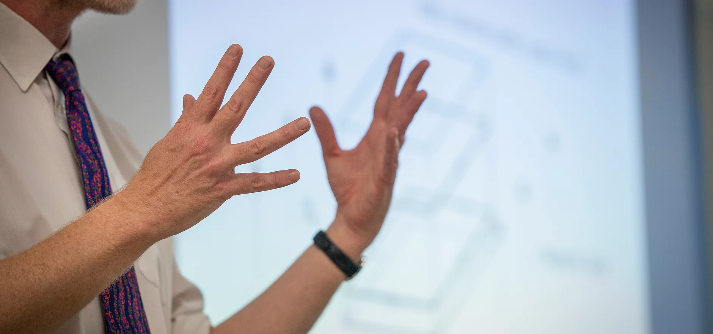

Наши проекты
Начиная с 2004 года, команда ТСМ регулярно выполняет проекты, направленные на развитие бизнеса своих клиентов, помогая им лучше понять отраслевую и клиентскую специфику, расширяя стратегические горизонты, генерируя новые идеи.
2004-2010
Разработка ключевых показателей эффективности деятельности (КПЭ) и внедрение системы мотивации на достижение результата в нефтяной компании
Разработка системы ключевых показателей эффективности для IT-компании
Разработка системы ключевых показателей эффективности для нефтехимического завода
Разработка стратегии развития компании, осуществляющей перевозки автомобилей железнодорожным транспортом
Разработка маркетинговой стратегии конструкторского бюро

2011-2015
Разработка системы ключевых показателей эффективности дочерних предприятий корпорации нефтехимической промышленности
Анализ опыта крупнейших мировых мегаполисов в области развития туризма и разработка рекомендаций по развитию московской индустрии гостеприимства
Оптимизациия процесса оценки эффективности капитальных вложений
Поиск инвестора (инвесторов) для строительства коммерческой недвижимости
2016-н.в.
Стратегическая сессия для определения приоритетов развития завода
Разработка концепции развития регионального туристско-рекреационного комплекса
Разработка стратегии развития региональной строительной компании
Мы никогда не останавливаемся на достигнутом и всегда движемся вперед, чтобы сделать бизнес понятнее.


info@tsmcons.ru
Moscow, Russia
+7 499 3470 112